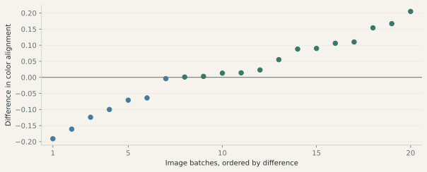
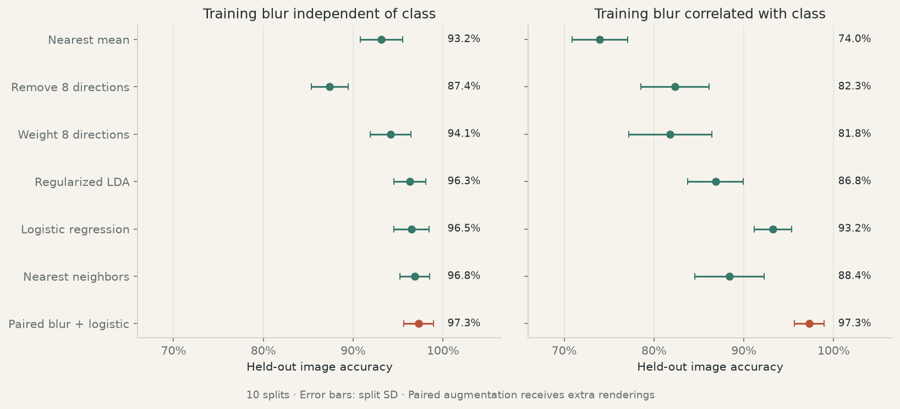
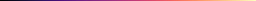

Geometry & structured transforms
Image variation and fitted transformations
Color and stroke width
Comparing same-shape and different-shape pairs
Each of 20 training batches contains 192 outlines: four shapes × four colors × three stroke widths × four renders. Forty pairs of distinct color, width and replicate combinations are drawn and used for each shape. In the different-shape condition, each second image is replaced by an image in the same slot from another shape. The two fits see the same 160 first images, the same 160 second images counted with repetitions, and identical color and width changes in corresponding pairs. Their allocation of individual render positions and scales to pairs can differ.
For each batch and method, PCA retains 20 dimensions and FastICA fits six components from one initialization. Color and width are used to match pairs and to score the results. For each factor, its training contrast selects the component with the largest absolute cosine. That same component is scored against a contrast from 192 new renders. The contrasts are mean red minus mean non-red, and mean width-4 minus mean width-1. No rendering seed occurs in more than one batch.
| Fit | Held-out color alignment | Held-out width alignment | Converged fits (of 20) |
|---|---|---|---|
| Same-shape pairs | 0.795 | 0.687 | 20 |
| Different-shape pairs | 0.742 | 0.629 | 15 |
| Ungrouped images | 0.747 | 0.672 | 3 |
The means include fits that reached the 1,000-iteration cap. At 10,000 iterations from the same initializations, same-shape pairing led different-shape pairing in 14 of 20 batches for each factor. The mean differences were 0.036 for color and 0.059 for width. Three different-shape fits and 17 ungrouped fits still reached the cap.
Same-shape pairs and ungrouped images scored in the fitting batch
Each batch contains 192 rendered images. For each of four shapes, 40 random pairs are drawn and self-pairs discarded. FastICA fits six components to the image differences after PCA reduces them to 20 dimensions. The comparison fits the same pipeline to the original images without grouping.
Color and stroke-width labels enter the scoring step. Each method is scored by the largest absolute cosine between its six fitted directions and a reference built from the same batch. The color reference is the mean red image minus the mean non-red image.
Across 20 batches with disjoint rendering seeds, mean color alignment was 0.810 for same-shape differences and 0.794 for original images. Mean stroke-width alignment was 0.692 for both methods, rounded to three decimals. Seed 0 gave color scores of 0.826 and 0.716. A separate series using 20 consecutive starting seeds, which share rendering seeds across runs, gave means of 0.796 and 0.800. Both series include seed 0.

A / Class-label-based geometry
Find variation within classes.
Digits 3, 5, and 8 supply class labels. PCA is fitted on training images, then the leading eight directions of pooled within-class covariance define the variation subspace. All three classes appear during fitting; original test-image identities are held out.
Variation around each class mean
For each class, subtract its mean before measuring variation. The second moment of pairwise differences, averaged within each class and then weighted by class size, gives twice this covariance and the same directions.
Classification under a blur shortcut
A Gaussian filter with a standard deviation of one pixel blurs 90% of 3s and 10% of 5s and 8s in expectation under correlated training blur. Independent blur has a 50% probability for every digit. Validation and test use independent blur in both cases. Hyperparameters use validation only. Accuracy below is the mean ± split standard deviation.
| Method | Independent training blur | Correlated training blur |
|---|---|---|
| Nearest mean | 93.2 ± 2.4% | 74.0 ± 3.1% |
| Remove variation subspace | 87.4 ± 2.0% | 82.3 ± 3.8% |
| Weight variation subspace | 94.1 ± 2.3% | 81.8 ± 4.6% |
| Regularized LDA | 96.3 ± 1.8% | 86.8 ± 3.1% |
| Logistic regression | 96.5 ± 2.0% | 93.2 ± 2.1% |
| Nearest neighbors | 96.8 ± 1.7% | 88.4 ± 3.9% |
| Paired blur + logistic | 97.3 ± 1.6% | 97.3 ± 1.6% |
The paired-augmentation model receives a sharp and a blurred version of every training image. The ten splits reuse images from the same digit dataset.

Choosing a weight from within-class and between-class variance
A separate ten-split test on the same three digit classes uses stronger blur (1.5 pixels), the same blur probabilities and disjoint training and test image identities within each split. PCA retains 50 coordinates. Random within-digit pairs define up to eight directions. A rule compares the ratio of within-class variance to variance of the three class means inside and outside those directions, then scales the directions by a single weight.
| Method | Independent training blur | Correlated training blur |
|---|---|---|
| Leave directions unchanged | 87.4% | 55.2% |
| Remove directions | 82.8% | 73.1% |
| Weight by within/between variance ratio | 86.8% | 54.3% |
| Regularized LDA | 93.3% | 75.2% |
The variance-ratio rule gave the selected directions a mean weight of 1.14 with independent blur and 1.16 with correlated blur. Here, training classes differed in how often they were blurred, so a difference between class means could reflect blur as well as digit identity.
Transfer across shape classes
Does the same edit move different shapes in the same direction?
In a separate 32 × 32 generator, each image is paired with a version that changes one specified factor. For each of four shapes, the mean pixel change on the other three is compared with the mean change on the held-out shape. A cosine of 1 means the two average changes point in the same direction. Individual images can differ from this average.
In one rendering run, alignment ranged from 0.836 to 0.941 across the four held-out shapes for thicker strokes, and from 0.690 to 0.918 for red-to-blue recoloring. Rotating a triangle by 45° gave 0.026, and rotating a cross gave −0.092.
B / Known-answer control
Fit a predefined color operation from examples.
This control assumes a single RGB rotation shared across pixels, then fits its coefficients from before-and-after examples. The competing fixed pixel pattern misses the target color and can add ghost outlines.
A least-squares scalar describes brightness. Orthogonal Procrustes fits one RGB matrix shared across pixels for a 30° color rotation around the gray axis. Both use paired source and target images. A shared additive image vector is fitted on the same pairs.
Ten seeds test the prescribed transformation and three successive applications. Relative squared error is below 10−20 for the fitted shared actions. The known generator law lies inside the proposed model family, making this a controlled class-transfer test.
Before
Original image
The shape and color before editing.
Goal
Requested image

Same outline, with the prescribed color change.
Method A
Add a pixel pattern
Add the average change at each fixed image position.
Method B
Apply a color rule
Convert each pixel’s color, wherever the outline lies.
Where the result misses the target
Each map compares the method’s output with the requested image above.

Largest absolute RGB-channel error per pixel. The same scale is used for both methods and both shapes.
First triangle and cross from test seed 0. Training pairs use a 30° rotation of RGB colors around the gray axis; three steps request a 90° rotation. Images are shown at their original relative intensities, clipped to [0, 1]. Error maps use the unclipped arrays.
C / Learned encoder
Test an action inside a trained representation.
A convolutional autoencoder with 32 coordinates trains on 3,000 synthetic images for 30 epochs, using Adam and pixel mean squared error. Three seeds vary training images and initialization. Nine base configurations fit a gain and offset at brightness ratio 1.5.
From the fitted pair to other multipliers
The six multipliers are 0.5, 0.75, 1.2, 1.5, 2, and 3; starting levels are 0.4 and 0.6. Test identities differ from fitting identities. Shape and color categories overlap encoder training. Targets outside the training intensity range [0.4, 1] remain unclipped and are reported separately.
Relative squared latent error · lower is better
Prediction error is measured relative to the actual encoded change, using all 32 coordinates.
| Encoder / rule | Within training intensity | Outside training intensity |
|---|---|---|
| Trained / fitted scaling action | 0.00388 | 0.00488 |
| Trained / scale about black-image encoding | 0.01126 | 0.01051 |
| Trained / shared shift | 0.91058 | 0.91129 |
| Random / fitted scaling action | 0.41359 | 0.41986 |
Decoded output
For each test condition, the fitted edit’s mean squared pixel error is divided by the error from multiplying the ordinary reconstruction by the requested brightness ratio. The mean of these ratios is 0.989 for targets within the training range and 1.173 outside it. Directly multiplying the original pixels gives the exact synthetic target. Scoring uses unclipped outputs.
References
Locatello et al. on learning from paired changes · Lenc and Vedaldi on how image transformations affect a representation · Alpaydin and Kaynak’s Optical Recognition of Handwritten Digits dataset (CC BY 4.0, via scikit-learn).